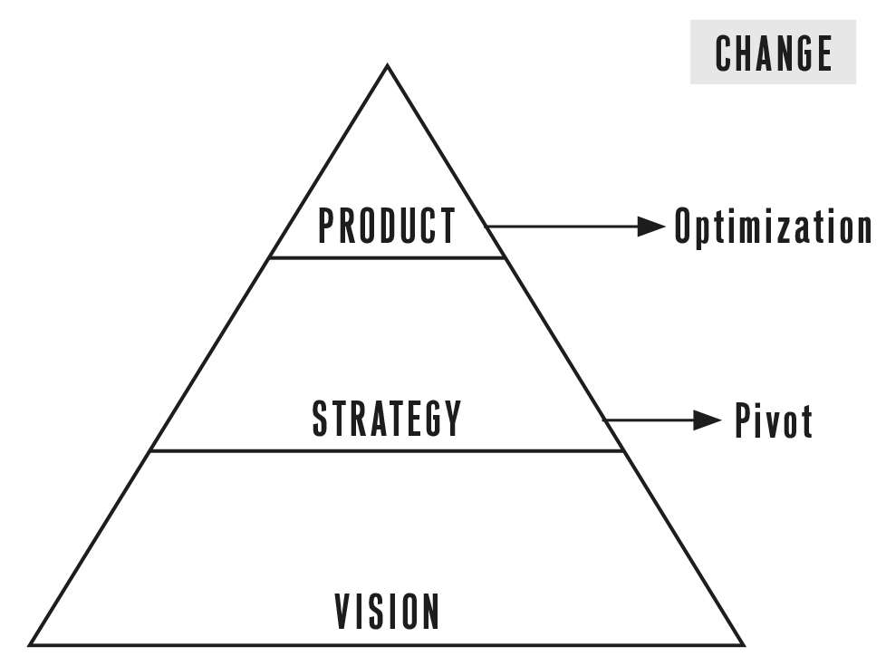

The Lean Startup takes its name from the lean manufacturing revolution that Taiichi Ohno and Shigeo Shingo are credited with developing at Toyota. Lean thinking is radically altering the way supply chains and production systems are run. Among its tenets are drawing on the knowledge and creativity of individual workers, the shrinking of batch sizes, just-in-time production and inventory control, and an acceleration of cycle times. It taught the world the difference between value-creating activities and waste and showed how to build quality into products from the inside out.
The Lean Startup adapts these ideas to the context of entrepreneurship, proposing that entrepreneurs judge their progress differently from the way other kinds of ventures do. Progress in manufacturing is measured by the production of high-quality physical goods. As we’ll see in Chapter 3, the Lean Startup uses a different unit of progress, called validated learning. With scientific learning as our yardstick, we can discover and eliminate the sources of waste that are plaguing entrepreneurship.
A comprehensive theory of entrepreneurship should address all the functions of an early-stage venture: vision and concept, product development, marketing and sales, scaling up, partnerships and distribution, and structure and organizational design. It has to provide a method for measuring progress in the context of extreme uncertainty. It can give entrepreneurs clear guidance on how to make the many trade-off decisions they face: whether and when to invest in process; formulating, planning, and creating infrastructure; when to go it alone and when to partner; when to respond to feedback and when to stick with vision; and how and when to invest in scaling the business. Most of all, it must allow entrepreneurs to make testable predictions.
For example, consider the recommendation that you build cross-functional teams and hold them accountable to what we call learning milestones instead of organizing your company into strict functional departments (marketing, sales, information technology, human resources, etc.) that hold people accountable for performing well in their specialized areas (see Chapter 7). Perhaps you agree with this recommendation, or perhaps you are skeptical. Either way, if you decide to implement it, I predict that you pretty quickly will get feedback from your teams that the new process is reducing their productivity. They will ask to go back to the old way of working, in which they had the opportunity to “stay efficient” by working in larger batches and passing work between departments.
It’s safe to predict this result, and not just because I have seen it many times in the companies I work with. It is a straightforward prediction of the Lean Startup theory itself. When people are used to evaluating their productivity locally, they feel that a good day is one in which they did their job well all day. When I worked as a programmer, that meant eight straight hours of programming without interruption. That was a good day. In contrast, if I was interrupted with questions, process, or—heaven forbid—meetings, I felt bad. What did I really accomplish that day? Code and product features were tangible to me; I could see them, understand them, and show them off. Learning, by contrast, is frustratingly intangible.
The Lean Startup asks people to start measuring their productivity differently. Because startups often accidentally build something nobody wants, it doesn’t matter much if they do it on time and on budget. The goal of a startup is to figure out the right thing to build—the thing customers want and will pay for—as quickly as possible. In other words, the Lean Startup is a new way of looking at the development of innovative new products that emphasizes fast iteration and customer insight, a huge vision, and great ambition, all at the same time.
Henry Ford is one of the most successful and celebrated entrepreneurs of all time. Since the idea of management has been bound up with the history of the automobile since its first days, I believe it is fitting to use the automobile as a metaphor for a startup.
An internal combustion automobile is powered by two important and very different feedback loops. The first feedback loop is deep inside the engine. Before Henry Ford was a famous CEO, he was an engineer. He spent his days and nights tinkering in his garage with the precise mechanics of getting the engine cylinders to move. Each tiny explosion within the cylinder provides the motive force to turn the wheels but also drives the ignition of the next explosion. Unless the timing of this feedback loop is managed precisely, the engine will sputter and break down.
Startups have a similar engine that I call the engine of growth. The markets and customers for startups are diverse: a toy company, a consulting firm, and a manufacturing plant may not seem like they have much in common, but, as we’ll see, they operate with the same engine of growth.
Every new version of a product, every new feature, and every new marketing program is an attempt to improve this engine of growth. Like Henry Ford’s tinkering in his garage, not all of these changes turn out to be improvements. New product development happens in fits and starts. Much of the time in a startup’s life is spent tuning the engine by making improvements in product, marketing, or operations.
The second important feedback loop in an automobile is between the driver and the steering wheel. This feedback is so immediate and automatic that we often don’t think about it, but it is steering that differentiates driving from most other forms of transportation. If you have a daily commute, you probably know the route so well that your hands seem to steer you there on their own accord. We can practically drive the route in our sleep. Yet if I asked you to close your eyes and write down exactly how to get to your office—not the street directions but every action you need to take, every push of hand on wheel and foot on pedals—you’d find it impossible. The choreography of driving is incredibly complex when one slows down to think about it.
By contrast, a rocket ship requires just this kind of in-advance calibration. It must be launched with the most precise instructions on what to do: every thrust, every firing of a booster, and every change in direction. The tiniest error at the point of launch could yield catastrophic results thousands of miles later.
Unfortunately, too many startup business plans look more like they are planning to launch a rocket ship than drive a car. They prescribe the steps to take and the results to expect in excruciating detail, and as in planning to launch a rocket, they are set up in such a way that even tiny errors in assumptions can lead to catastrophic outcomes.
One company I worked with had the misfortune of forecasting significant customer adoption—in the millions—for one of its new products. Powered by a splashy launch, the company successfully executed its plan. Unfortunately, customers did not flock to the product in great numbers. Even worse, the company had invested in massive infrastructure, hiring, and support to handle the influx of customers it expected. When the customers failed to materialize, the company had committed itself so completely that they could not adapt in time. They had “achieved failure”—successfully, faithfully, and rigorously executing a plan that turned out to have been utterly flawed.
The Lean Startup method, in contrast, is designed to teach you how to drive a startup. Instead of making complex plans that are based on a lot of assumptions, you can make constant adjustments with a steering wheel called the Build-Measure-Learn feedback loop. Through this process of steering, we can learn when and if it’s time to make a sharp turn called a pivot or whether we should persevere along our current path. Once we have an engine that’s revved up, the Lean Startup offers methods to scale and grow the business with maximum acceleration.
Throughout the process of driving, you always have a clear idea of where you’re going. If you’re commuting to work, you don’t give up because there’s a detour in the road or you made a wrong turn. You remain thoroughly focused on getting to your destination.
Startups also have a true north, a destination in mind: creating a thriving and world-changing business. I call that a startup’s vision. To achieve that vision, startups employ a strategy, which includes a business model, a product road map, a point of view about partners and competitors, and ideas about who the customer will be. The product is the end result of this strategy (see the chart on this page).

Products change constantly through the process of optimization, what I call tuning the engine. Less frequently, the strategy may have to change (called a pivot). However, the overarching vision rarely changes. Entrepreneurs are committed to seeing the startup through to that destination. Every setback is an opportunity for learning how to get where they want to go (see the chart below).

In real life, a startup is a portfolio of activities. A lot is happening simultaneously: the engine is running, acquiring new customers and serving existing ones; we are tuning, trying to improve our product, marketing, and operations; and we are steering, deciding if and when to pivot. The challenge of entrepreneurship is to balance all these activities. Even the smallest startup faces the challenge of supporting existing customers while trying to innovate. Even the most established company faces the imperative to invest in innovation lest it become obsolete. As companies grow, what changes is the mix of these activities in the company’s portfolio of work.
Entrepreneurship is management. And yet, imagine a modern manager who is tasked with building a new product in the context of an established company. Imagine that she goes back to her company’s chief financial officer (CFO) a year later and says, “We have failed to meet the growth targets we predicted. In fact, we have almost no new customers and no new revenue. However, we have learned an incredible amount and are on the cusp of a breakthrough new line of business. All we need is another year.” Most of the time, this would be the last report this intrapreneur would give her employer. The reason is that in general management, a failure to deliver results is due to either a failure to plan adequately or a failure to execute properly. Both are significant lapses, yet new product development in our modern economy routinely requires exactly this kind of failure on the way to greatness. In the Lean Startup movement, we have come to realize that these internal innovators are actually entrepreneurs, too, and that entrepreneurial management can help them succeed; this is the subject of the next chapter.